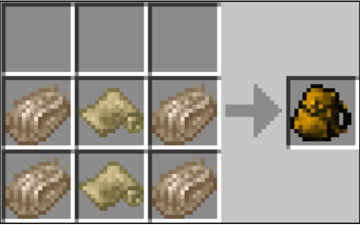
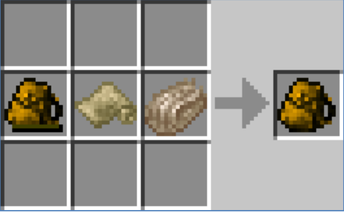
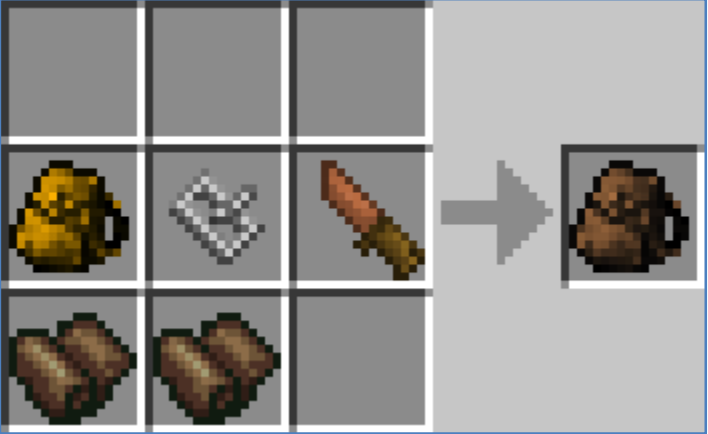
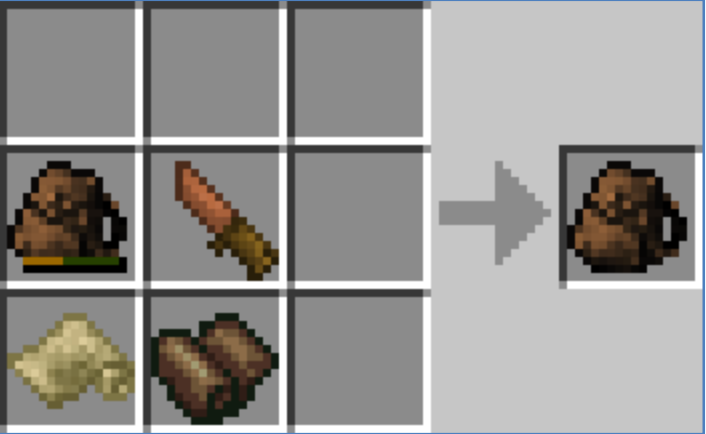
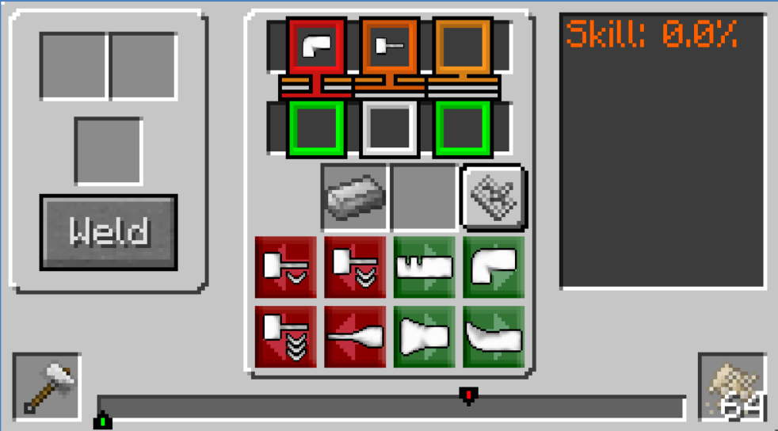

这个wiki将帮助你更好的进行游戏
Author: Bob Yuan
The idea behind this mod is to allow the player to capture animals in one location and release them to another location. Animals are easily found but hard to take anywhere. Using rope to lead them works, but is slow and painful and frequently breaks. Also if you pass by a ravine, the animal could fall down and damage/kill itself. Animal cages of all shapes and descriptions have been used throughout history, but I wanted to implement something that would use a currently unused item in TFC – Burlap Cloth. The idea of carrying an animal this way was inspired by an Australian folk song “Waltzing Matilda”, where the swagman stuffed the jumbuck (sheep) into his tucker bag in order to steal it.
太长不读版：tucker bage 可以让你在一个地方捕获动物，然后在另外一个地方把它放出来，相比于绳子，tucker bag 不受地形限制，可以避免捕获过程中动物死亡或受伤。
The standard tucker bag is made using two pieces of burlap cloth and four jute fibre, in the crafting space. 需要 2 个 burlap cloth（麻布）和 4 个黄麻纤维在合成台里合成 
The standard tucker bag can be repaired at any stage by using a piece of burlap cloth and one jute fibre.
用一个麻布和一个黄麻纤维来修复受损的 standard tucker bag

Note: If the standard tucker bag is fully damaged, it is destroyed and cannot be repaired.
注意：完全损坏的 standard tucker bag 会消失
The reinforced tucker bag is made by upgrading an used standard tucker bag with 2 pieces of leather, one iron buckle and any knife.
使用 Standard Tucker Bag 和一个 Iron Buckle 外加一个小刀，两个皮革即可制成 Reinforced Tucker Bag

注意：完全损坏的 reinforced tucker bag 会消失
The reinforced tucker bag can be repaired at any stage by using one piece of burlap cloth, one piece of leather and any knife.
用一个麻布，一个皮革和小刀即可修复受损的 Reinforced Tucker Bag

如下图所示使用 Wrought Iron Ingot（铁锭）在一个铁砧上锻造而成。

手持 Tucker Bag 左键点击动物，动物就会被捕获，所有属性都可以被保留，背包的图标会发生改变，并自动放入背部（除非你的背部已经背着东西）
注意正在被骑乘和牵引的动物无法被捕获。
手持已经捕获动物的 Tucker Bag 右键点击即可释放，需要注意的是，释放时准星不能对准任何物体（建议指向远处）
Last Update: Mon Dec 19 2016 16:58:07 GMT+0800 (CST) Source File